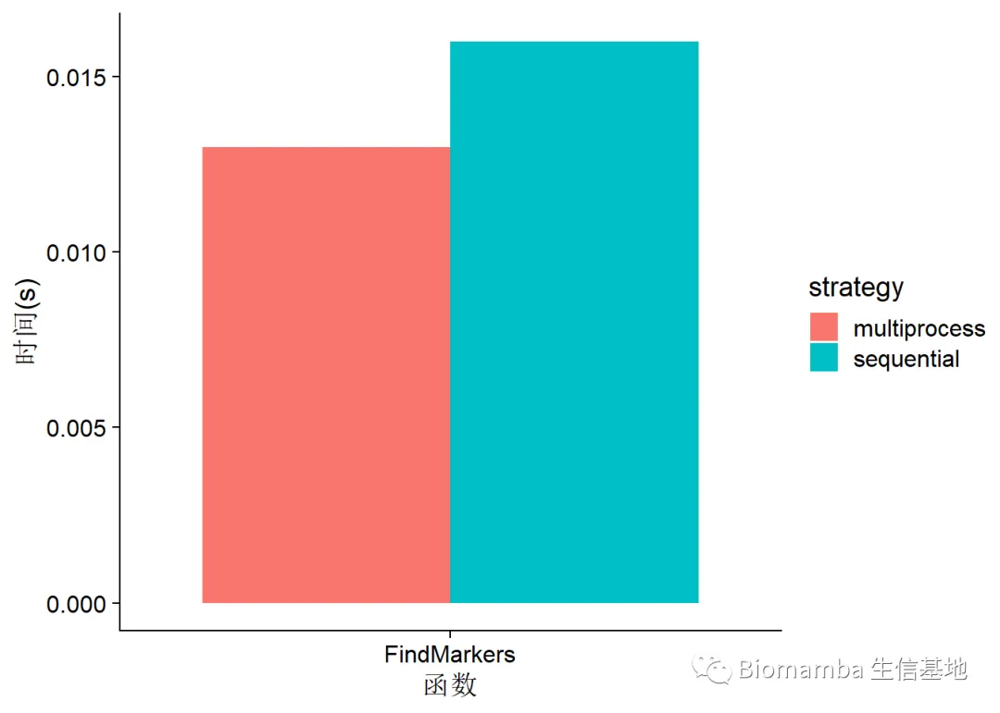

如何加快Seurat的计算速度
原文：https://mp.weixin.qq.com/s?__biz=MzAwMzIzOTk5OQ==&mid=2247494116&idx=1&sn=f3dc577cbb464779062aada313191a05&chksm=9b3c90b4ac4b19a27a17f958e3437337d5b10b6ba7153e4dd43dedcb4df812d8c6b4d86fe970#rd 合集：单细胞教程全收录
一、写在前面：
有些同学在使用服务器的时候(生信分析为什么离不开服务器)发现自己使用服务器的时候计算速度甚至还不如本地的电脑。在沟通的过程中我们发现，有一部分同学不太会在自己运行任务时调用多线程并行计算来加速自己的计算(48线程的机器只用1个线程当然很亏啦)。我们此前就以monocle为例跟大家讨论过并行计算的问题(答读者问 （十七）调用的线程越多就算的越快嘛?)，这次我们就以Seurat官方教程[1]教大家如何通过future的并行策略加快Seurat的计算。
[1] https://satijalab.org/seurat/
二、并行计算
0 测试代码和数据
不要再说我的链接失效啦，我也不知道为啥腾讯和百度云不对付，微信页面或腾讯浏览器时常打不开百度云链接，链接最好在谷歌浏览器中打开，真的失效了再提醒客服更换链接哦。
链接: https://pan.baidu.com/s/13-1p-2wzZDzTW7TbgeQiKQ?pwd=mw3f

若链接失效可以文末联系客服领取~
****
1 当前计算策略
Seurat中默认的计算策略是“单线程的”(sequential)，可以通过future::plan函数来查看当前计算策略。
if(!require(future))install.packages('future')
## Loading required package: future
## Warning: package 'future' was built under R version 4.0.5
plan()
## sequential:
## - args: function (..., envir = parent.frame())
## - tweaked: FALSE
## - call: NULL
2. 开启并行计算
支持future开启并行计算的函数有: NormalizeData() ScaleData() JackStraw() FindMarkers() FindIntegrationAnchors() FindClusters()
plan("multiprocess", workers = 4)#works就是参与计算的最大线程数
## Warning: Strategy 'multiprocess' is deprecated in future (>= 1.20.0). Instead,
## explicitly specify either 'multisession' or 'multicore'. In the current R
## session, 'multiprocess' equals 'multisession'.
plan()
## multiprocess:
## - args: function (..., envir = parent.frame(), workers = 4)
## - tweaked: TRUE
## - call: plan("multiprocess", workers = 4)
以FindMarkers为例做并行计算演示，相信大家已经能发现了，并行计算的缺点就是函数的进度条会丢失
if(!require(Seurat))install.packages('Seurat')
## Loading required package: Seurat
## Warning: package 'Seurat' was built under R version 4.0.5
## Attaching SeuratObject
pbmc <- readRDS("pbmc.rds")
DimPlot(pbmc)

timing.comparisons <- data.frame(fxn = character(), time = numeric(), strategy = character())
plan("sequential")
# start <- Sys.time()
# pbmc <- ScaleData(pbmc, vars.to.regress = "percent.mt", verbose = FALSE)
# end <- Sys.time()
# timing.comparisons <- rbind(timing.comparisons, data.frame(fxn = "ScaleData", time = as.numeric(end -
# start, units = "secs"), strategy = "sequential"))
start <- Sys.time()
markers <- FindAllMarkers(pbmc, ident.1 = "NK", verbose = FALSE)
## Warning: No DE genes identified
## Warning: The following tests were not performed:
## Warning: When testing Naive CD4 T versus all:
## 正式参数"ident.1"有多个与之相对应的实际参数
## Warning: When testing CD14+ Mono versus all:
## 正式参数"ident.1"有多个与之相对应的实际参数
## Warning: When testing Memory CD4 T versus all:
## 正式参数"ident.1"有多个与之相对应的实际参数
## Warning: When testing B versus all:
## 正式参数"ident.1"有多个与之相对应的实际参数
## Warning: When testing CD8 T versus all:
## 正式参数"ident.1"有多个与之相对应的实际参数
## Warning: When testing FCGR3A+ Mono versus all:
## 正式参数"ident.1"有多个与之相对应的实际参数
## Warning: When testing NK versus all:
## 正式参数"ident.1"有多个与之相对应的实际参数
## Warning: When testing DC versus all:
## 正式参数"ident.1"有多个与之相对应的实际参数
## Warning: When testing Platelet versus all:
## 正式参数"ident.1"有多个与之相对应的实际参数
end <- Sys.time()
timing.comparisons <- rbind(timing.comparisons, data.frame(fxn = "FindMarkers", time = as.numeric(end -
start, units = "secs"), strategy = "sequential"))
plan("multiprocess", workers = 2)
# start <- Sys.time()
# pbmc <- ScaleData(pbmc, vars.to.regress = "percent.mt", verbose = FALSE)
# end <- Sys.time()
# timing.comparisons <- rbind(timing.comparisons, data.frame(fxn = "ScaleData", time = as.numeric(end -
# start, units = "secs"), strategy = "multiprocess"))
start <- Sys.time()
markers <- FindAllMarkers(pbmc, ident.1 = "NK", verbose = FALSE)
## Warning: No DE genes identified
## Warning: The following tests were not performed:
## Warning: When testing Naive CD4 T versus all:
## 正式参数"ident.1"有多个与之相对应的实际参数
## Warning: When testing CD14+ Mono versus all:
## 正式参数"ident.1"有多个与之相对应的实际参数
## Warning: When testing Memory CD4 T versus all:
## 正式参数"ident.1"有多个与之相对应的实际参数
## Warning: When testing B versus all:
## 正式参数"ident.1"有多个与之相对应的实际参数
## Warning: When testing CD8 T versus all:
## 正式参数"ident.1"有多个与之相对应的实际参数
## Warning: When testing FCGR3A+ Mono versus all:
## 正式参数"ident.1"有多个与之相对应的实际参数
## Warning: When testing NK versus all:
## 正式参数"ident.1"有多个与之相对应的实际参数
## Warning: When testing DC versus all:
## 正式参数"ident.1"有多个与之相对应的实际参数
## Warning: When testing Platelet versus all:
## 正式参数"ident.1"有多个与之相对应的实际参数
end <- Sys.time()
timing.comparisons <- rbind(timing.comparisons, data.frame(fxn = "FindMarkers", time = as.numeric(end -
start, units = "secs"), strategy = "multiprocess"))
#可视化：
library(ggplot2)
## Warning: package 'ggplot2' was built under R version 4.0.5
library(cowplot)
ggplot(timing.comparisons, aes(fxn, time)) + geom_bar(aes(fill = strategy), stat = "identity", position = "dodge") +
ylab("时间(s)") + xlab("函数") + theme_cowplot()

能节省一些时间，但是这个测试数据比较小，等大家计算更大队列的单细胞数据时，能够为你节省更多的时间。
三、内存问题
并行计算时有默认调用内存的上限，你可能会遇到以下报错：
## Error in getGlobalsAndPackages(expr, envir = envir, globals = TRUE) :
## The total size of the X globals that need to be exported for the future expression ('FUN()') is X GiB.
## This exceeds the maximum allowed size of 500.00 MiB (option 'future.globals.maxSize'). The X largest globals are ...
如果你遇到了以上的报错，那么就需要调整内存大小，例如上面无法分配500MB的内存，想要调整为1G，可以通过以下方式：
options(future.globals.maxSize = 1 * 1024^3)
其实与其计算到一半报错让我血压上升，我更愿意在设置线程时就把内存调整的足够高(当然你需要保证你的机器确实有那么多内存，内存不够的可以点这里)：
#写个小函数
makecore <- function(workcore,memory){
if(!require(Seurat))install.packages('Seurat')
if(!require(future))install.packages('future')
plan("multiprocess", workers = workcore)
options(future.globals.maxSize= memory*1024*1024**2)
}
#
makecore(4,1)#这里以4线程,1GB为例，
四、版本信息
大概1/3很多报错的发生都是因为版本问题：
sessionInfo()
## R version 4.0.3 (2020-10-10)
## Platform: x86_64-w64-mingw32/x64 (64-bit)
## Running under: Windows 10 x64 (build 19044)
##
## Matrix products: default
##
## locale:
## [1] LC_COLLATE=Chinese (Simplified)_China.936
## [2] LC_CTYPE=Chinese (Simplified)_China.936
## [3] LC_MONETARY=Chinese (Simplified)_China.936
## [4] LC_NUMERIC=C
## [5] LC_TIME=Chinese (Simplified)_China.936
##
## attached base packages:
## [1] stats graphics grDevices utils datasets methods base
##
## other attached packages:
## [1] cowplot_1.1.1 ggplot2_3.3.5 SeuratObject_4.0.2 Seurat_4.0.2
## [5] future_1.22.1
##
## loaded via a namespace (and not attached):
## [1] Rtsne_0.15 colorspace_2.0-2 deldir_1.0-6
## [4] ellipsis_0.3.2 ggridges_0.5.3 spatstat.data_2.1-0
## [7] farver_2.1.0 leiden_0.3.9 listenv_0.8.0
## [10] ggrepel_0.9.1 fansi_0.5.0 codetools_0.2-16
## [13] splines_4.0.3 knitr_1.34 polyclip_1.10-0
## [16] jsonlite_1.7.2 airports_0.1.0 ica_1.0-2
## [19] cluster_2.1.0 png_0.1-7 uwot_0.1.10
## [22] shiny_1.7.1 sctransform_0.3.2 spatstat.sparse_2.0-0
## [25] readr_2.1.1 compiler_4.0.3 httr_1.4.2
## [28] assertthat_0.2.1 Matrix_1.3-4 fastmap_1.1.0
## [31] lazyeval_0.2.2 later_1.3.0 htmltools_0.5.2
## [34] tools_4.0.3 igraph_1.2.6 gtable_0.3.0
## [37] glue_1.4.2 RANN_2.6.1 reshape2_1.4.4
## [40] dplyr_1.0.7 Rcpp_1.0.7 scattermore_0.7
## [43] jquerylib_0.1.4 vctrs_0.3.8 nlme_3.1-149
## [46] lmtest_0.9-38 usdata_0.2.0 xfun_0.25
## [49] stringr_1.4.0 globals_0.14.0 mime_0.11
## [52] miniUI_0.1.1.1 lifecycle_1.0.1 irlba_2.3.3
## [55] goftest_1.2-2 MASS_7.3-53 zoo_1.8-9
## [58] scales_1.1.1 spatstat.core_2.3-0 hms_1.1.0
## [61] promises_1.2.0.1 spatstat.utils_2.2-0 parallel_4.0.3
## [64] RColorBrewer_1.1-2 yaml_2.2.1 reticulate_1.20
## [67] pbapply_1.5-0 gridExtra_2.3 sass_0.4.0
## [70] rpart_4.1-15 stringi_1.7.4 highr_0.9
## [73] openintro_2.2.0 rlang_0.4.11 pkgconfig_2.0.3
## [76] matrixStats_0.60.1 evaluate_0.14 lattice_0.20-41
## [79] cherryblossom_0.1.0 ROCR_1.0-11 purrr_0.3.4
## [82] tensor_1.5 labeling_0.4.2 patchwork_1.1.1
## [85] htmlwidgets_1.5.4 tidyselect_1.1.1 parallelly_1.28.1
## [88] RcppAnnoy_0.0.19 plyr_1.8.6 magrittr_2.0.1
## [91] R6_2.5.1 generics_0.1.0 DBI_1.1.1
## [94] withr_2.4.2 mgcv_1.8-33 pillar_1.6.4
## [97] fitdistrplus_1.1-6 survival_3.2-7 abind_1.4-5
## [100] tibble_3.1.5 future.apply_1.8.1 crayon_1.4.1
## [103] KernSmooth_2.23-17 utf8_1.2.2 spatstat.geom_2.3-2
## [106] plotly_4.10.0 tzdb_0.1.2 rmarkdown_2.10
## [109] grid_4.0.3 data.table_1.14.2 digest_0.6.27
## [112] xtable_1.8-4 tidyr_1.1.4 httpuv_1.6.2
## [115] munsell_0.5.0 viridisLite_0.4.0 bslib_0.3.1
如何联系我们
公众号后台中消息更新不及时，超过48h后便不允许回复读者消息，这里给大家留一下领取资料、免费服务器的微信号 ，方便各位随时交流、提建议（由助理接待）。此外呼声一直很高的交流群也建好了，欢迎大家入群讨论：永久免费的千人生信、科研交流群
大家可以阅读完这几篇之后添加给生信入门初学者的小贴士 如何搜索公众号过往发布内容

 您点的每个赞和在看，我都认真当成了喜欢
您点的每个赞和在看，我都认真当成了喜欢